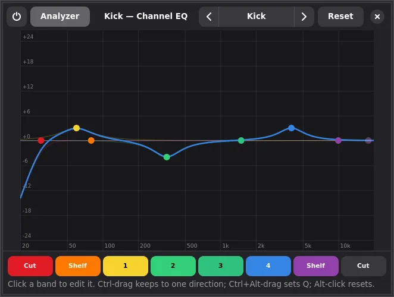
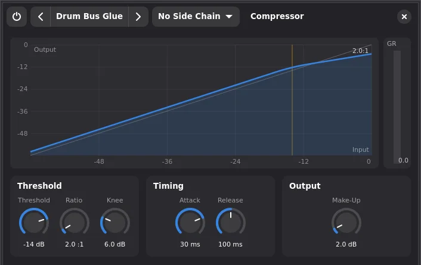

Mixing
Mixing that keeps up with you
A mixer that reads the way the signal flows, an EQ on every channel, buses, VCAs, side-chains and headphone mixes, and controls built to be quick with a mouse.
The channel strip, top to bottom
Press X for the mixer under the arrangement, or Ctrl+2 for it in its own window on a second screen. Every strip reads top to bottom in the order the signal flows:

| Row | What it does |
|---|---|
| Setting | Load, save, copy and paste a whole strip; choose its strip type |
| EQ | A thumbnail of the Channel EQ curve; click to open it |
| Input | The interface input, or the instrument on an instrument track |
| Ø | Flips polarity, before the EQ, to fix a snare bottom mic or a DI against an amp |
| Audio FX | The inserts, in order; drawn as Pedals, Amp, Cabinet and Effects on guitar and bass strips |
| Sends | Sends to buses, each with its level knob |
| Output | Stereo Out, a bus, a new bus, a hardware output, and the VCA the strip follows |
| Automation | Off, Read, Touch, Latch or Write |
| Pan, fader, meter | Pan readout from L64 to R64; fader to +6 dB; meter with peak hold and a clip light |
| I, R, M, S | Input monitoring, record, mute and solo |
The mixer shows all tracks, every track and bus, or Single: the selected track followed by every bus it feeds, down the chain to the output. Filter by Audio, Instrument, Aux and Output, choose narrow or wide strips, and turn on pictures in the insert slots.
Channel EQ on every strip
Every channel has an eight-band EQ built in, ahead of its inserts, so the first move on any track never needs a plug-in slot.
- Low and high cuts at 6 to 48 dB per octave, low and high shelves, and four bells.
- Drag a point to move a band, with Shift for fine control; scroll to change its width.
- An analyser shows the track's spectrum behind the curve.
- Presets for kick, snare, overheads, bass, acoustic and electric guitar, keys, vocals and backing vocals, among others.

Buses, sends and VCAs
Add a send from the empty slot under Sends and pick a bus, or New Bus to create one and route to it in a single step. Each send taps one of three points:
- Post Pan (the default) follows the fader and the pan, for reverbs and delays that should sit where the source does;
- Post Fader follows the fader with its own pan;
- Pre Fader ignores the fader, for headphone mixes and parallel compression.
Buses can feed other buses, and any routing that would feed a bus back into itself is greyed out before you can choose it.
A VCA fader carries no audio. Assign channels to it from their Output menu, and it rides all of them together while keeping their balance, without summing them through a bus. It's the way to bring the whole drum kit down 2 dB in the last chorus.
Side-chains
The Compressor and Noise Gate can listen to another track. Choose the track in the plug-in's Side Chain menu: duck the bass under the kick, or open a gate on the doubled guitar when the main one plays. The key is delayed to line up with the signal it controls.
Headphone mixes for the band
When the drummer wants more click and the singer wants more of themselves, choose Options ▸ New Cue Mix… in the mixer and pick a pair of interface outputs. Every track gets a pre-fader send to it, set to match the current mix, so the cue starts as a copy of what you're hearing and you only change what each player asks for.
Solo doesn't touch cue mixes, so soloing in the control room doesn't pull the band's headphones out from under them, and cue mixes are never part of an export.
Mixing quickly
The controls are built to be fast with a mouse:
- Faders move relative to where you grab them, so a click never makes the level jump. Shift slows them right down for fine moves; Alt-click returns to 0 dB; double-click the readout to type a level.
- Select several strips and move one: they all move together, keeping their balance.
- Press on a mute or solo button and drag across the others to set them all at once. Alt-click mutes or solos every track. Ctrl-click a solo button to make that strip solo-safe, so the reverb return stays in when you solo the vocal.
- Drag a plug-in to another slot to move it, or hold Alt as you drop to copy it with its settings. Alt-click a plug-in to bypass it.
Channel strip settings
Factory settings load a whole strip in one go, EQ and plug-ins with their presets:
- Guitar Clean
- Guitar Crunch
- Guitar High Gain
- Bass
- Lead Vocal
- Kick
- Snare
- Overheads
- Drum Bus
- Guitar Bus
- Mix Bus
- Reverb Send
Save your own, and copy and paste a strip from one track to another.
Built-in processing
Each built-in plug-in has its own window with labelled knobs and a picture of what it's doing, like the compressor's transfer curve and gain reduction meter, plus factory presets named for the job.
- Compressor: threshold, ratio, knee, attack, release, make-up. Presets include Kick Punch, Snare Snap, Drum Bus Glue, Bass Even, Vocal Leveller and Mix Bus Glue.
- Limiter: look-ahead, with Safety, Drum Bus Peaks and master presets.
- De-esser: split-band or wide, with a Listen switch to hear what it catches, and a Cymbals preset for harsh overheads.
- Stereo Delay: synced to the tempo or free, ping-pong, filters in the feedback. Slapback, Tape Echo and Dotted Eighth presets.
- Space Reverb: rooms, plates and halls, including Drum Room and Vocal Plate.
- Saturation and Overdrive for colour.

Automation
Press A to see automation lanes over the tracks. Click to add a point, drag to move it, Alt-click to delete it. Or ride the mix live:
- Touch writes only while you're holding a control, then lets go back to what was there.
- Latch keeps writing whatever you last touched until you stop.
- Write overwrites everything on the channel.
Volume, pan, mute, send levels and up to 64 parameters of every plug-in can be automated, including moves you make in a plug-in's own window. A whole pass becomes a single undo step.
Under the hood
Solstice spreads the tracks across your processor's cores on real-time worker threads, up to eight, so a big session with an amp sim on every guitar doesn't pile everything onto one core. Plug-in delay compensation works out how late every track and bus is and lines them all up at every bus and at the output, sends and side-chains included. The control bar shows the total, and warns you in red if the audio has dropped out.